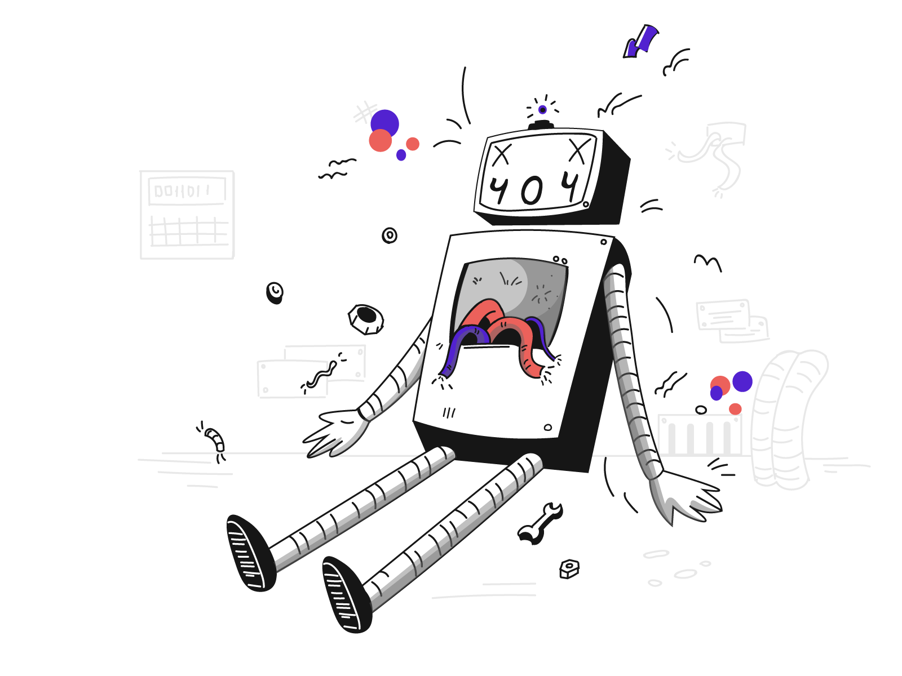

<div class="" aria-labelledby="modal-title" role="dialog" aria-modal="true">
  <div class="text-center sm:block sm:p-0">
    <div class="" aria-hidden="true"></div>
    <span class="hidden sm:inline-block sm:align-middle" aria-hidden="true">​</span>
    <!--Modal panel : This is where you put the pop-up's content, the div on top this coment is the wrapper -->
    <div class="inline-block text-center transition-all transform mb-10">
      <div class="div">
        
        
      </div>
      <div>
        <div class="mt-3 sm:mt-5">
          <h1 class="mb-4 text-3xl text-center font-semibold leading-loose tracking-wide text-neutral-600">
            {{ data.title }}
          </h1>
          <p class="text-base font-normal leading-relaxed text-secondary-text">
            {{ data.message }}
          </p>
        </div>
      </div>
      <mat-dialog-actions>
        <div class="mt-8 flex" [ngClass]="{ 'gap-10 justify-center': data?.actionURL }">
          <div class="">
            <button
              class="
                items-center
                block
                px-5
                py-2
                text-base
                font-medium
                text-center text-red-500
                transition
                duration-500
                ease-in-out
                transform
                border border-red-500
                bg-red-100
                shadow-md
                rounded
                focus:outline-none focus:ring focus:ring-offset-2 focus:ring-red-100
              "
              mat-dialog-close
            >
              Cancel
            </button>
          </div>
          <ng-container *ngIf="data?.actionURL">
            <div class="">
              <a [routerLink]="[data.actionURL]">
                <button
                  [mat-dialog-close]="true"
                  class="
                    items-center
                    block
                    px-8
                    py-2
                    text-base
                    font-semibold
                    text-center text-white
                    transition
                    duration-500
                    ease-in-out
                    transform
                    border border-primary
                    bg-primary
                    rounded
                    focus:outline-none focus:ring-2 focus:ring-offset focus:ring-blue-500
                  "
                >
                  Buy
                </button>
              </a>
            </div>
          </ng-container>
        </div>
      </mat-dialog-actions>
    </div>
  </div>
</div>
